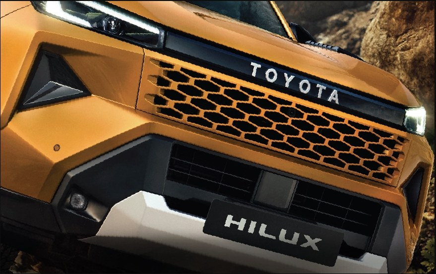
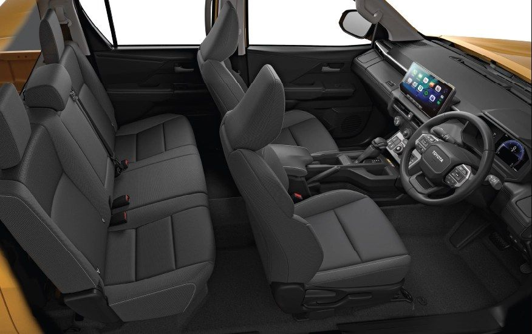
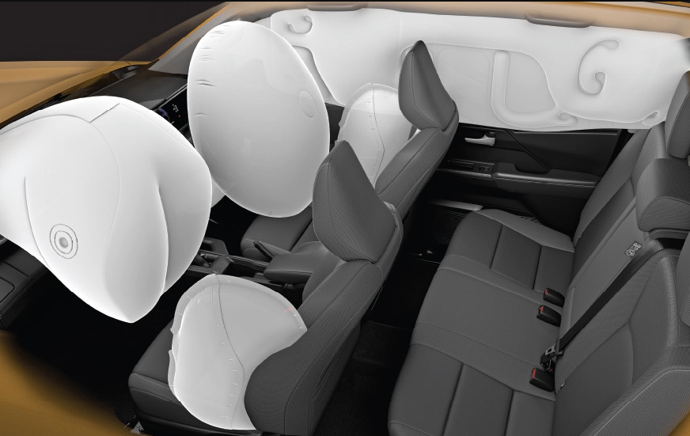
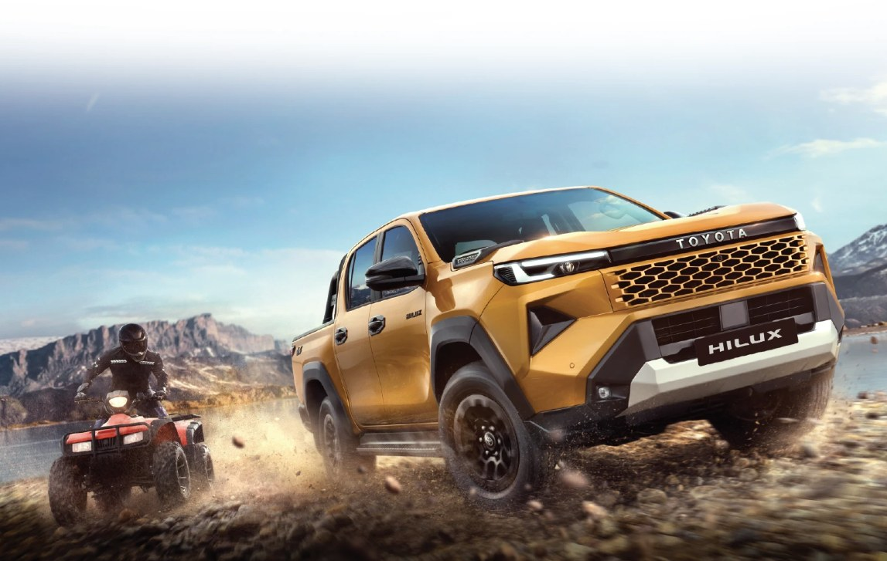
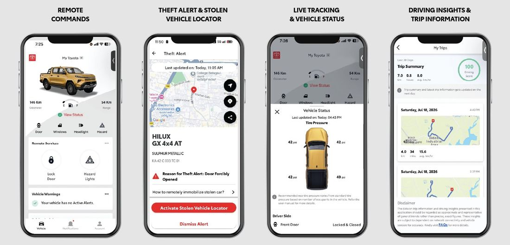

New Toyota Hilux Review: What's Changed, Price, Specs & Features (2026)

Toyota didn't touch the engine, the chassis, or the 4x4 hardware for this update. They just made the Hilux look angrier. That's fine, because the hardware underneath was never the problem. The rear drum brakes and a turning circle better suited to a farm gate than a city street were the problem, and a new grille doesn't fix either.
Built on a platform with five decades of history and 20 million units sold worldwide, the Hilux has never needed to prove it can survive abuse. What it's trying to prove now is that it can also survive being someone's only vehicle: a lifestyle truck, not just a work one. Whether that trade actually works is the whole question this review is trying to answer.
Quick Verdict
If you need serious 4x4 capability, the Hilux hands it over without asking you to compromise anywhere. If you're buying it because it looks tough and you'll mostly be doing school runs, the drum brakes and the turning radius are going to remind you of that mistake every single day. This isn't a truck that lets you forget what it actually is.
1
Price & Variants
₹31.99 – ₹36.69 Lakh*
*Ex-showroom, India
| Variant | Drivetrain | Ex-Showroom Price |
|---|---|---|
| GX 4x2 AT | Rear-Wheel Drive | ₹31.99 Lakh |
| GX 4x4 AT | Four-Wheel Drive | ₹33.69 Lakh |
| VX 4x4 AT | Four-Wheel Drive | ₹36.69 Lakh |
Manual's gone entirely for this generation, and nobody's going to miss it. Automatic is the only gearbox on offer, across all three trims, and that's the right call for a truck this size.
Best Value Pick
Get the GX 4x4 AT and stop there. For ₹1.7 lakh more than the base 4x2, you're buying the low-range transfer case, the electronic differential lock, and the terrain modes: the actual hardware that makes a Hilux worth the badge, not just a truck that can't leave the road wearing a name that implies it can. The VX throws in leather and a bigger screen for another ₹3 lakh, and not one bit of it changes what the truck can do when the tarmac ends. If you're never planning to leave pavement, this isn't your truck. Go buy something that doesn't charge you for capability you'll never touch.
2
Exterior Design

Image: Toyota India
New trapezoidal grille, chrome surround, piano black bumper accents, a refreshed set of alloys. It's a proper visual refresh, and credit where it's due, it works. The truck looks meaner without looking like it's trying too hard. But strip away the sheet metal and you're looking at last generation's engine, last generation's chassis, last generation's 4x4 hardware, carried over untouched. This is a truck that got a new face and kept its entire personality, which is either exactly what you want, or a sign this "update" is doing less than the marketing suggests.
3
Interior Design

Image: Toyota India
Spec the higher trims and you get leather, dual-zone climate with rear vents, an 8-inch touchscreen with Android Auto and Apple CarPlay, a TFT cluster, power seat adjustment: a cabin that genuinely doesn't feel like a compromise. Drop down to the base variant and all of that evaporates: fabric seats, manual air-con, a cabin that stops pretending to be anything but a work truck. That's not a criticism. It's a warning. Know which Hilux you're actually configuring, because the gap between the base and the top trim isn't subtle, and showroom demo units are never the base spec.
4
Features

Image: Toyota India
Seven airbags, stability control, hill-start assist, ABS, ISOFIX mounts, whiplash-reducing seats: this is not a safety sheet that was phoned in. The Hilux also connects through the My Toyota app for remote monitoring and theft protection, which is dense enough to earn its own breakdown. We cover exactly what it does in the Tech & Safety Deep-Dive below.
| Specification | Detail |
|---|---|
| Length x Width x Height | 5325mm x 1855mm x 1815mm |
| Wheelbase | 3085mm |
| Fuel Tank Capacity | 80 litres |
| Seating Capacity | 5 seats |
| Gross Vehicle Weight | 2910 kg |
| Payload Capacity | 470 kg |
5
Performance

Image: Toyota India
A 2.8-litre four-cylinder diesel putting out 204 PS doesn't sound dramatic on paper, and it isn't meant to. What matters is the 500 Nm you get on the automatic, which is what you're actually buying now that the manual's off the table (manual variants made do with 420 Nm). The 4WD system runs a proper limited-slip differential and genuine low-range gearing, not an all-wheel-drive badge doing marketing work it hasn't earned. Underneath sits a ladder frame chassis tough enough for hardware you'd expect on a dedicated off-roader, not a truck with leather seats and Apple CarPlay: hill descent control, active traction control, an electronic differential lock. That capability isn't free. On the road, you're paying for it with a firmer ride than any car-based SUV and a turning radius that turns every parking lot into a three-point-turn negotiation.
6
Tech & Safety Deep-Dive

Image: Toyota India
The Hilux connects through the My Toyota app, and it covers four genuinely useful areas. Remote Commands let you lock or unlock the doors and trigger hazard lights from your phone. Theft Alert & Stolen Vehicle Locator flags forced entry and pinpoints the truck on a map the moment it's taken. Live Tracking & Vehicle Status surfaces real-time detail like individual tyre pressures and door status. Driving Insights & Trip Information logs every trip: distance, duration, average speed, a calculated driving score. This isn't the kind of feature you use once and forget. It's the kind you're grateful for exactly once, and that once is the only time it needed to work.
On the safety side, the standard kit carries over from what's already covered above: 7 airbags, stability control, hill-start assist, ABS, ISOFIX mounts. Between the connected monitoring and that baseline, Toyota's actually thought through both halves of "what could go wrong": mechanically, on the road, and remotely, whenever the truck's out of sight. Neither half is flashy. Both matter more than the styling update this whole review started with.
How We Scored This
Following our Review Methodology, we rate every review across five criteria, then average them into the final Octane Score.
| Criteria | Score |
|---|---|
| Performance & Engineering | 9.5 / 10 |
| Practicality | 7.5 / 10 |
| Features & Technology | 8.0 / 10 |
| Safety | 9.0 / 10 |
| Value for Money | 8.5 / 10 |
| Octane Score (average) | 8.5 / 10 |
7
Verdict
The Hilux only makes sense for one buyer: someone who genuinely needs serious off-road capability and is willing to live with a truck's compromises to get it. Everyone else buying this for the styling is going to spend two years fighting a turning radius that was never designed with them in mind. If your actual driving is mostly city commutes, a Fortuner or a mid-size SUV does that job better, costs less to live with, and won't punish you daily for a capability you never use. The Hilux isn't trying to be that vehicle. The mistake is expecting it to be.
Who Should Buy This
- Buyers who genuinely need serious 4x4 off-road capability, not just rugged looks
- Anyone regularly towing or carrying heavy loads, thanks to the strong torque and payload capacity
- Long-distance travellers who'll benefit from the 80-litre fuel tank
Who Should Avoid This
- Primarily city drivers, since the large turning radius and firm ride are a real daily trade-off
- Buyers wanting rear disc brakes as standard, given the rear drums on this size of vehicle
- Budget-conscious buyers, since pricing sits above most lifestyle SUV alternatives
Disclosure: This article may contain affiliate links. We may earn a commission if you make a purchase through them, at no extra cost to you.
Back to where you came from